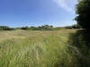
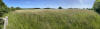
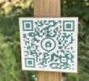
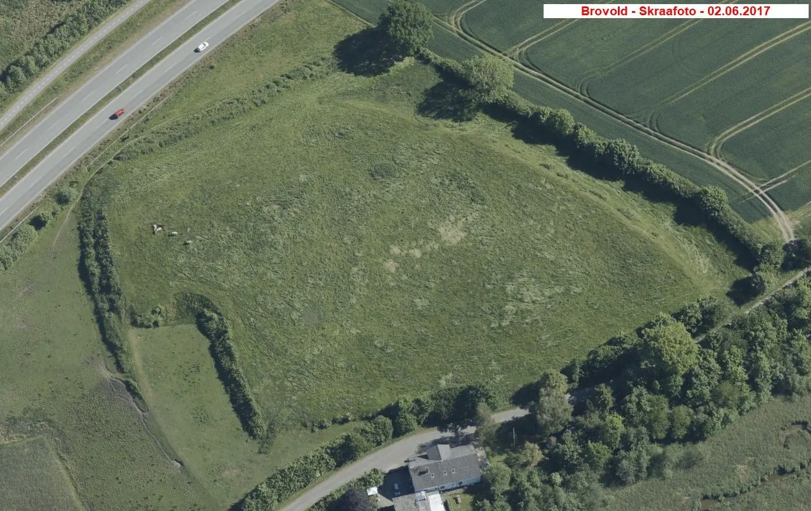

Brovold
Wallanlage/Siedlung


3 - Brovold - Letztes Update 31.07.2025
Navidaten: 54.948576 / 9.894451 oder: Gammel Brovej 5A, 6440 Augustenborg
Im Rahmen meiner 2022er Wikingertour war ich am Samstag, 18.06.2022, vor Ort. Aber ich fand im Gegnsatz zu meinen früheren Besuchen zunächst keinerlei Beschilderung mit einem erläuternden Text mehr vor: Dafür wurde nun ein (versteckter) Pfosten mit CR-Code, der über einen Smartphone CR-Code Scanner zu dem "Augustenborg Guiden" führt, aufgestellt. In diesem kann immerhin auch die deutsche Sprache ausgewählt werden. Im Untermenü kommt man auch zu dieser Seite "https://app.augustenborg.dk/de/brovold-3/".
Dort findet sich dann dieser Text-Eintrag zu Brovold (Verlinkungen darin von mir angelegt):
"Willkommen in Brovold einem geschützten Baudenkmal aus dem frühen Mittelalter. Das Gebiet ist für die Öffentlichkeit zugänglich, aber wegen des Weideviehs, das die Vegetation vom 1. Mai bis zum 30. Oktober niedrig hält (Anmerkung: Dem war leider nicht so - siehe unten), eingezäunt. Das Gebiet besteht aus Wiesen und Sümpfen und gehört der dänischen Naturbehörde.
Das erste, was Sie sehen, ist ein vier Meter hoher Erdwall, der etwa 100 Meter vor der alten Mühle Bromølle liegt. Es handelt sich um einen etwa 250 Meter langen Erdwall mit einem davor liegenden trockenen Graben. Der Wall war auf beiden Seiten mit Torf bedeckt. Zwischen dem Wall und dem Graben befand sich eine Berme ein Plateau, das verhindern sollte, dass herabfallendes Material den Graben auffüllte. Diese Struktur mit Torf, Berme und trockenem Graben ist von den Stadtmauern von Hedeby, Danevirke und Århus bekannt und stammt aus dem frühen Mittelalter, d. h. vom Ende der Wikingerzeit bis etwa 1200.
Der Wall war ursprünglich sechs Meter hoch und hatte die Form eines halbrunden Walls. Er bildete einen dreieckigen, geschützten Bereich, der im Norden von den steilen Hängen der Förde begrenzt wurde. In der Wikingerzeit und im Mittelalter reichte die Augustenburger Förde bis zum Mjang-Damm und bildete eine natürliche Barriere für den Verkehr auf Alsen in Richtung Norden und Süden. Bei dem Dorf Bro machte die Förde eine fast senkrechte Biegung, und hier gab es eine Furt und einen Handelsposten innerhalb der Schutzwälle.
Der Wall diente wahrscheinlich als strategische Verteidigungsanlage, die bemannt werden konnte, wenn eine Invasion oder ein Überfall der Wenden zu befürchten war, was bis zum Ende des 12. Jahrhunderts ein Problem darstellte. Vielleicht waren der Wall und die umliegenden mittelalterlichen Kirchen Teil eines größeren Verteidigungssystems für das gesamte Alsen.
Der Chronist Helmold (*um 1120 - nach 1177) erwähnt mehrere wendische Angriffe auf die dänischen Küsten, darunter einen Angriff auf Alsen in der Mitte des 12. Jahrhunderts:
Nach kaum vierzehn Tagen traf das Heer der Slawen völlig unerwartet ein, nahm das ganze Land in Besitz, legte die Kirchen in Schutt und Asche, machte die Inselbewohner zu Gefangenen und schlug jeden, der es wagte, Widerstand zu leisten, mit einem scharfen Schwert nieder.
Nach den ersten Ausgrabungen an diesem Ort in den 1930er Jahren glaubte man, eine Stadt aus der Wikingerzeit gefunden zu haben. Eine Ausgrabung in den 1970er Jahren ergab jedoch, dass das Datum um einige hundert Jahre nach vorne, ins frühe Mittelalter, verschoben werden muss. Die Datierung erfolgte anhand von Tonscherben, Kämmen, Schlüsseln, Schnallen, Hufeisen und anderen Funden vor Ort. Die Ergebnisse zeigen, dass die meisten Aktivitäten zwischen 1150 und 1200 stattfanden.
Die Ausgrabungen ergaben, dass sich um das Handelszentrum herum eine Reihe von Häusern und Ständen befunden hatten. Die Häuser waren klein etwa 3 mal 4 Meter im Grundriss. Insgesamt wurden Spuren von acht Häusern und 25 Feuerstellen gefunden. Die Größe und die Tatsache, dass keine Spuren von Ställen gefunden wurden, könnten darauf hindeuten, dass sie als vorübergehende Unterkunft dienten. Die homogenen Häuser befanden sich hauptsächlich an der Biegung der Förde im nördlichen Teil des Geländes, wo Spuren eines kleinen Hafens oder einer Anlegestelle gefunden wurden.
Außerdem wurden Tausende von Tierknochen gefunden, die gleichmäßig über das Gelände verteilt waren. Dies lässt darauf schließen, dass es sich um einen Marktplatz handelte, der zu einer bestimmten Jahreszeit, vielleicht während der Schlachtmonate im Spätherbst, genutzt wurde. Als kleine Randbemerkung sei erwähnt, dass bis zum Beginn des letzten Jahrhunderts in Brovold große Viehmärkte abgehalten wurden.
Im Laufe der Jahre wurden die Feuchtgebiete östlich der Augustenburger Förde durch den Bau von Dämmen und Straßen von der Förde abgeschnitten. Heute fließt der kleine Fluss Strømmen im ehemaligen Fördegebiet vom Mjang-Damm bis zum Nydam und in das Lillehav (kleine Meer).
Wenn Sie einen längeren Spaziergang machen wollen, können Sie bis zum Mjang-Damm weiterwandern, der in diesem Guide nicht beschrieben ist. Folgen Sie dem Augustenburg-Pfad bis nach Bro, und biegen Sie am Brovej rechts ab. Dann folgen Sie dem Golfplatz bis zum Mjang-Damm, wo Sie mit etwas Glück die Nachtigall hören oder einen Blick auf die schönen Bartmeisen erhaschen können. Der Schilfbussard, der etwas größer als ein Mäusebussard ist, wird oft am Himmel gesehen."
Allerdings war entgegen den dortigen Ausführungen der Bewuchs am Samstag, 18.06.2022, enorm - siehe diese Bilder. Inzwischen habe ich entdeckt, dass ein Luftfoto vom 09.04.2023 von Skraafoto einen niedrigen Bewuchs wiedergibt. Über den u.a. QR Code wird beim Beitrag zu "Brovold" (4:37 Minuten) erklärt, dass das Weidevieh den Bewuchs auf der Fläche vom 01.05. bis zum 30.10 niedrig hält. Da waren die Viecher bei meinem 2022er Besuch offenbar spät dran! :-)
  


Am südlichen Stadtrand von Augustenborg befindet sich der der Brovold. Dabei handelt es sich um eine wikingerzeitliche Wallanlage. Diese umgab ein Dorf, bzw. einen Hauptlingshof.
Hier wurden zwischen 1931-33 durch den damaligen Leiter des Museums auf Schloss Sønderborg, durch Jens Peter Raben (*14.03.1880 - 18.02.1960, Archäologe und Museumsdirektor - link-LIVES)
 Bildquelle:
1920 gemalt von Sophus Hansen (1871-1946) - im Besitz des
Museum Sønderjylland in
Sønderborg -
Lizenz:
Public Domain
Bildquelle:
1920 gemalt von Sophus Hansen (1871-1946) - im Besitz des
Museum Sønderjylland in
Sønderborg -
Lizenz:
Public Domain
groß angelegte archäologische Untersuchungen durchgeführt. Danach lag auf dem hochgelegenen Feld am Ende der Wikingerzeit und zu Beginn des Mittelalters ein Dorf, das gegen Süden durch einen mächtigen Halbreiswall geschützt wurde. Der Wall bestand innen aus geschichtetem Lehm in verschiedenen Mischungen. An den Außenseiten war der Wall mit aufgestapelten Grassoden verstärkt. Der vorgelagerte Wallgraben führte zu keiner Zeit Wasser. Gegen Norden lag der schiffbare Fjord, der einen natürlichen Schutz bot. Bei den Ausgrabungen fanden sich auf dem ca. 2 ha großen Areal innerhalb des Walls Spuren von kleinen, rechteckigen, ca. 3 x 4 m großen Holzhäusern, die eine Feuerstelle in einer Ecke hatten. Die Häuser wurden alle nach einem einheitlichen Schema errichtet. Die Ausgrabungen förderten auch diverse Abfallgruben zu Tage. Es fanden sich dagegen kaum Spuren von Handwerkern, nur geringe Anzeichen für Knochenschnitzer / Kammmacher.
Nach meinen ursprünglichen Infos sollten sich die Ausgrabungsfunde im Museums auf Sønderborg Schloss befinden (Museet på Sønderborg Slot, Sønderbro 1, 6400 Sønderborg, E-mail: mss@sja.dk).
Da ich bei einem Besuch im Juli 2004 allerdings nichts zum Brovold vorfand, habe ich beim Museum per eMail angefragt. Ich erhielt zur Antwort, dass das archäologische Museum für ganz Nordschleswig seit 1991 allein das Haderslev Museum ist - Dalgade 7 - 6100 Haderslev. Funde aus Brovold seien jedoch noch in den Sammlungen des Museums auf Sønderborg Schloss und einige davon werden im Herbst 2005 wieder in eine ständige Ausstellung eingehen (Ausstellung "Kampen om Oldtiden" / "Der Kampf um die Vorgeschichte", in Vorbereitung).
Kurze Wegbeschreibung - Geodaten s.o.: Wenn man von der Schnellstraße 405 nach Augustenborg abbiegt, muss man über den "Lillehav" - vorbei am Yachthafen. An der ersten Kreuzung geht es nach rechts. Nun weiter bis zum Abzweig nach rechts in die Straße "Krumom". Danach nach links in den "Gammel Brovej". Nach ca. 700 m liegt rechter Hand der Brovold - gegenüber dem alleinstehenden Anwesen Hausnummer 5 (Bromølle). Hier befand sich einst die links verlinkte Infotafel.
Die Informationen in "Fund og Fortidsminder" zu "Brovold (Svenskeskanse)" finden sich hier.
Literaturhinweise:
J. Raben - Udgravningerne i vikinigebyen Brovold, Fra Als og Sundeved, Heft 7, 1931-32, S. 3-19
Jan Kock - Brovold - En befæstet bebyggelse fra den tidlig middelalder, KUML 1978, S. 193-222
Susanne Østergaard - Brovold på Als En nytolkning af den befæstede plads Brovolds formål med udgangspunkt i en analyse af dyreknoglematerialet, S. 237-246 - Archäologie in Schleswig, Band 14, 2012
Dieses Luftfoto ist von der Webseite "Skråfoto" - gehört zum "Klimadatastyrelsen" - Aufnahmedatum 02.06.2017 - Download 23.01.2022 - darf unter Verweis auf deren Urheberrechte - Lizenz: CC BY 4.0 - frei verwendet werden.
Über dieser Webseite wird nach Eingabe der Anschrift - Gammel Brovej 5, 6440 Augustenborg - diese Örtlichkeit mit mehreren Aufnahmen aus den verschiedenen Himmelsrichtungen wiedergegeben. Man kann unter verschiedenen Aufnahmejahren - 2017 - 2019 - 2021 - 2023 wählen. Die Aufnahmen sollen auch zukünftig alle zwei Jahre aktualisiert werden.
